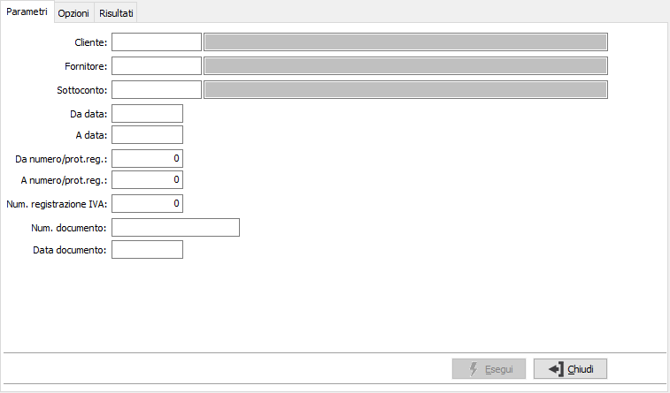
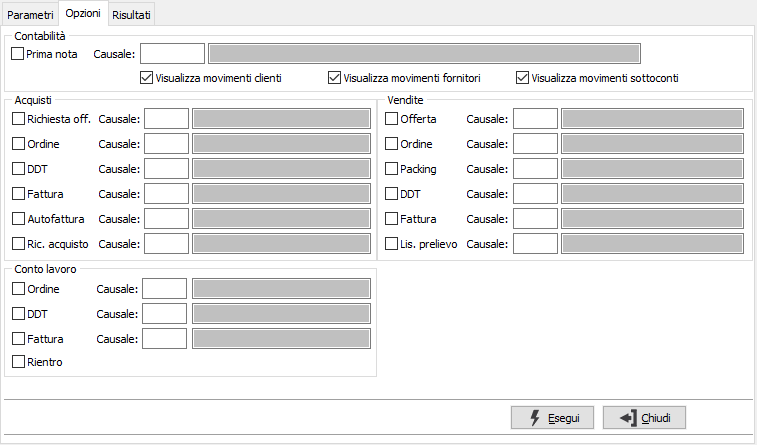
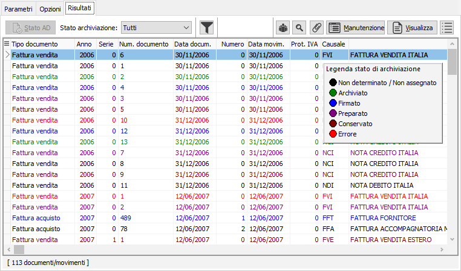

Il pulsante consente di verificare la presenza di
allegati per i documenti visualizzati; premendo il pulsante viene fatta
una elaborazione ed aggiunta una colonna alla griglia contenete il numero
di allegati collegati ad ogni documento.
Il pulsante consente di verificare la presenza di
allegati per i documenti visualizzati; premendo il pulsante viene fatta
una elaborazione ed aggiunta una colonna alla griglia contenete il numero
di allegati collegati ad ogni documento.Ricerca documenti
Il programma consente di ricercare tramite vari criteri di selezione tutte le tipologie di documento per cui è prevista l’archiviazione.
Il programma si articola su due finestre video. La prima, Parametri, consente la definizione dei parametri di ricerca.

La sezione Parametri contiene parametri generici comuni a più documenti quali i codici cliente, fornitore o sottoconto, i limiti di data documento, di numero documento o di registrazione; i limiti devono essere inseriti in maniera coerente con i documenti da ricercare, ad esempio se ricerco sul ciclo attivo è inutile inserire un fornitore oppure un sottoconto.

La sezione Opzioni è relativa ai parametri di selezione di movimenti contabili e documenti attivi, passivi e del conto lavoro; è necessario spuntare la relativa casella per abilitare la procedura a ricercare quel tipo di documento/movimento eventualmente specificando una singola causale; per la contabilità è possibile specificare, singolarmente con le apposite spunte, se ricercare i movimenti relativi a clienti, fornitori o sottoconti.
Confermando tramite pressione del bottone Esegui, viene avviata la selezione e richiamata la finestra video Risultati:

La finestra video visualizza gli estremi dei documenti trovati consentendo di determinare lo stato di archiviazione, di effettuarne la manutenzione, di visualizzarli tramite il gestore di documenti configurato, di consultare eventuali allegati associati al documento oppure al cliente/fornitore; fornisce anche una stampa dei risultati visualizzati.
La determinazione dello stato di archiviazione si attiva con l'apposito pulsante "Stato AD" e riporta i documenti in colori diversi in base allo stato in cui si trovano; è presente una legenda (come nell'esempio) che è possibile richiamare e togliere utilizzando il bottone in alto a destra.
Il pulsante consente di verificare la presenza di
allegati per i documenti visualizzati; premendo il pulsante viene fatta
una elaborazione ed aggiunta una colonna alla griglia contenete il numero
di allegati collegati ad ogni documento.

 Il pulsante consente
di impostare filtri sulle colonne presenti nella griglia; dalla finestra
mostrata a lato è possibile indicare per ogni campo un valore tra quelli
presenti nell'analisi, in modo da filtrare i documenti visualizzati.
Il pulsante consente
di impostare filtri sulle colonne presenti nella griglia; dalla finestra
mostrata a lato è possibile indicare per ogni campo un valore tra quelli
presenti nell'analisi, in modo da filtrare i documenti visualizzati.